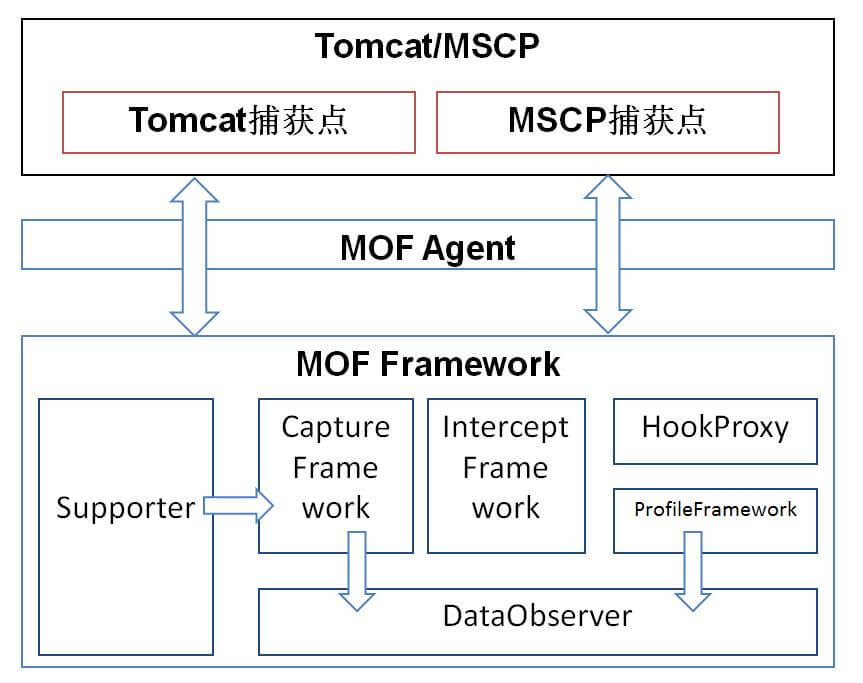

中间件增强框架
MOF架构
MOF架构组件图

核心组件：
Supporter，CaptureFramework，InteceptFramework，HookFactory，ProfileFramework，DataObserver
各组件说明：
- Supporter:抽象的一个功能支持类，代表一种功能，可动态加载；
- CaptureFramework：实时数据抓取框架，提供抓取实时数据的功能，；
- InterceptFramework:AOP实现框架，提供切面扩展功能；
- ProfileFramework:画像数据的捕获，实现了事件劫持监听（画像监听器）；
- HookProxy：应用代码劫持框架；
- DataObserver:暴露数据抓取接口(JMX/HTTP)供MonitorAgent抓取使用；